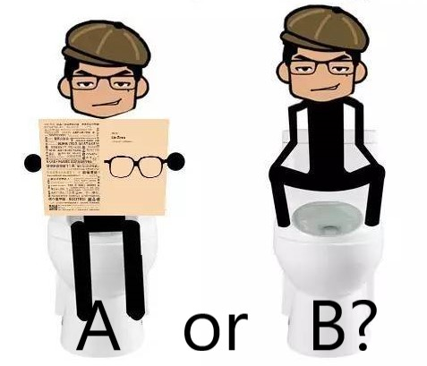

<!DOCTYPE html>
<html lang="en">
<head>
    <meta charset="UTF-8">
    <meta name="viewport" content="width=device-width, initial-scale=1.0">
    <meta http-equiv="X-UA-Compatible" content="ie=edge">
    <title>Document</title>
    
</head>
<body>
    <!--  -->
    <canvas id='mc' height='400' width='1800' style='border:1px solid yellow'></canvas>
   
    <script>
        /**@type{HTMLCanvasElement}*/
    var cvs=document.getElementById('mc');
    var ctx=cvs.getContext('2d');
    var url='http://www.tairan.com/usr/uploads/2014/08/ghost.png';

    // ctx.save();
    var image=new Image();
   
    //解决：污染画布无法提取图像
    //image.setAttribute('crossOrigin','anonymous');
    
    image.src=url;

    image.onload=function(){

        // imgPattern=ctx.createPattern(image,'repeat');
        // ctx.beginPath();
        // ctx.arc(240,180,180,0,2*Math.PI,false);
        // ctx.closePath();
        // ctx.fillStyle=imgPattern;
        // ctx.fill();

        ctx.drawImage(image,0,0);
        document.getElementById('img').src=cvs.toDataURL("image/png")
 }
    </script>
    
</body>
</html>